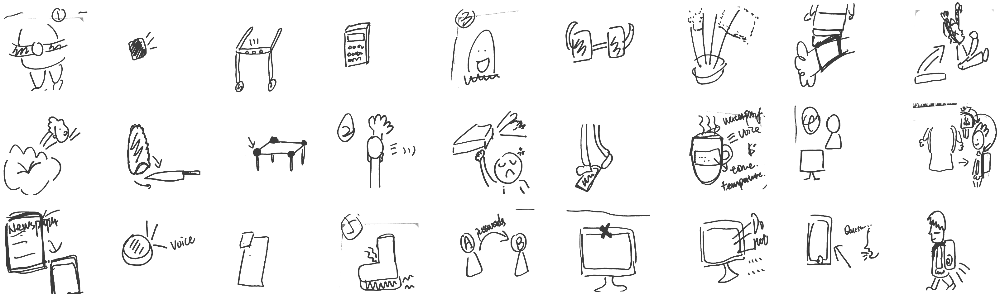
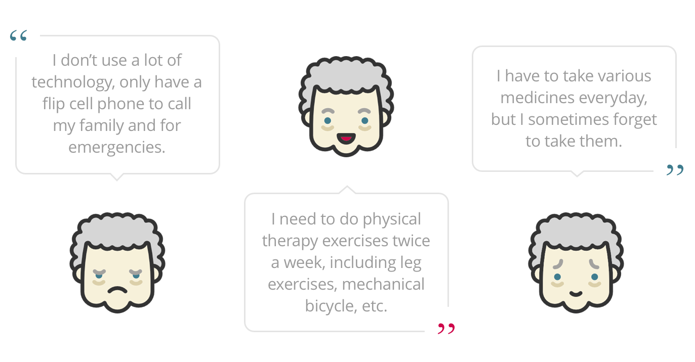
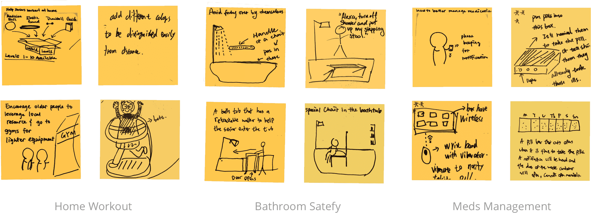
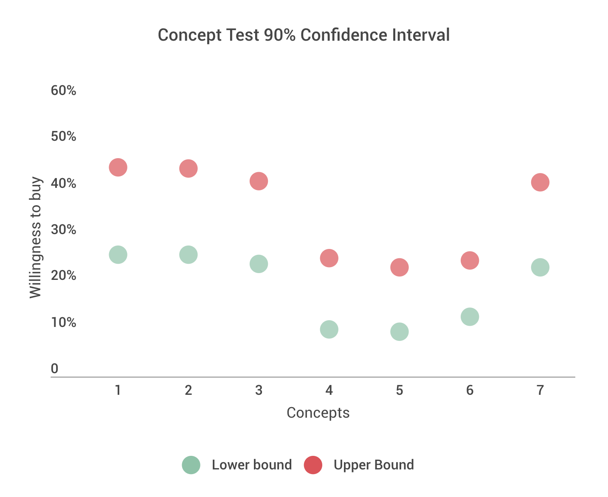
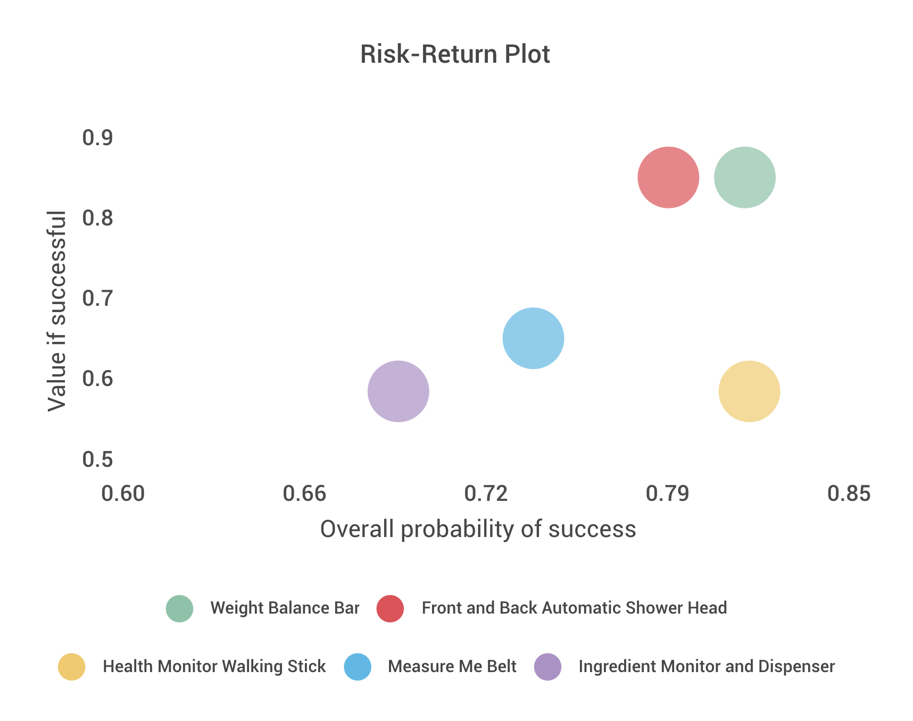
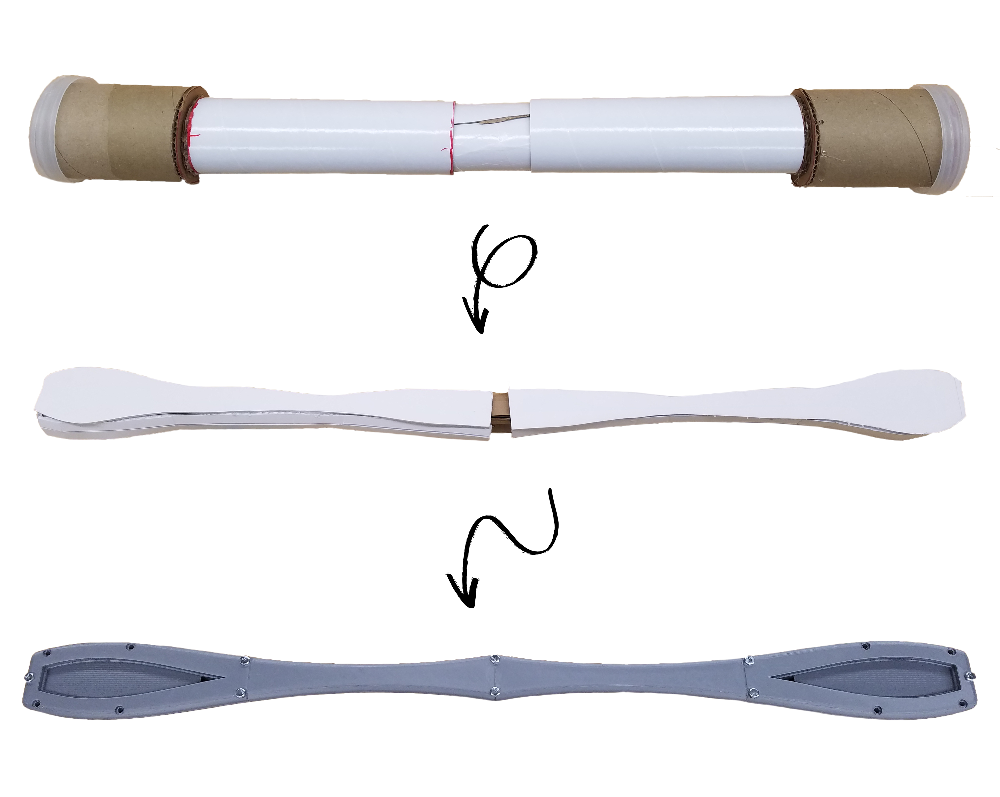
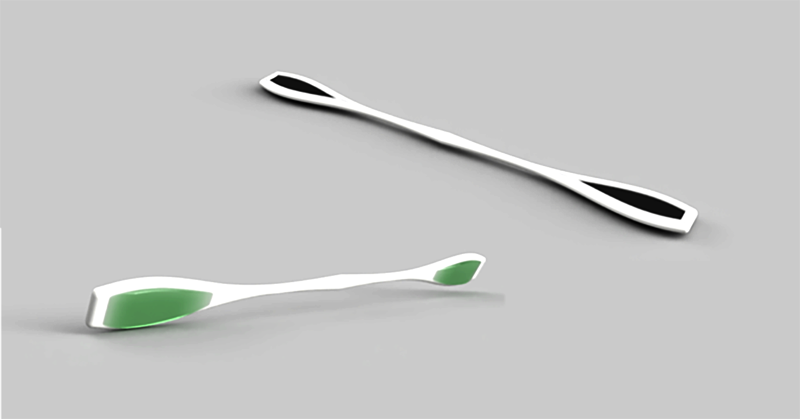
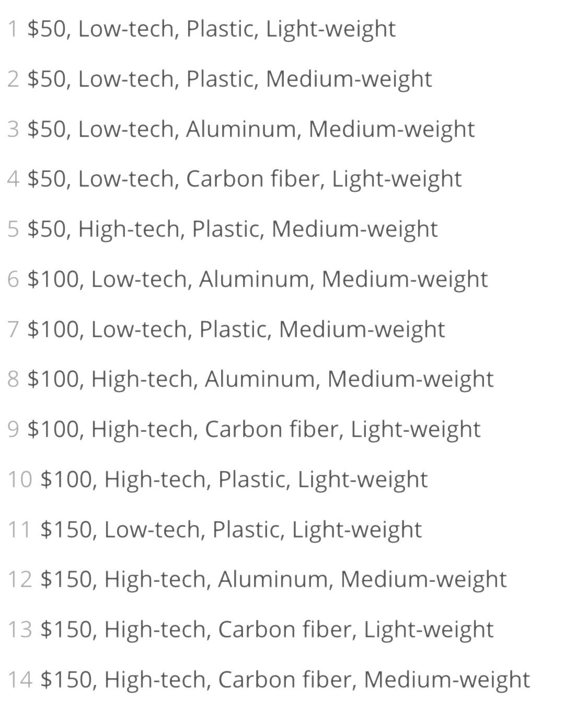
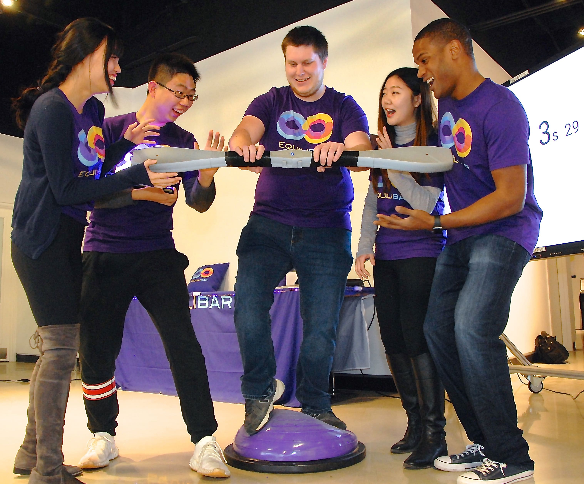

Geriatric Health Maintenance
Integrated Product Development
METHODS/TOOLS
Physical Prototyping, 3D Rendering,
Arduino, Conjoint Analysis
DURATION
Jan 2018 - Apr 2018
Fuzzy Front End
Advances in nutrition, disease control, pharmaceuticals and other health-related technologies have led to a sharp increase in life expectancy in developed countries. This has created a demographic bulge in the senior adult category, which includes people aged roughly 55 and older. Social and healthcare provider institutions face increasing pressure to meet the health needs presented by the large numbers of people in this status. The given challenge is to design a product suitable for use by senior adults, incorporating the use of active technology, to improve health maintenance and outcomes. More specifically, the product should satisfy the following characteristics:
- Performance: The product must function reliably
- Target demographic: Senior adults, outside institutional care
- Target retail price: $200
- Manufacturability: Major touch surfaces fabricated by the team
Ethnographic Research
By the year of 2030, the number of individuals in the United States 65 years and over will reach 70 million, and people 85 years and older will be the fastest growing segment of the population (National Institutes of Health). Falls are the leading cause of fatal injury and the most common cause of non-fatal trauma-related hospital visits among older adults (National Council on Aging).
With all the growing yet disturbing statistics, we conducted interviews with six senior adults to further understand how they are actually coping with these geriatric concerns. Here are some quotes that caught our eyes: 
These interview findings were then transformed into three relevant personas:


Concept Generation
To simulate seniors who has limited dexterity with their hands, we performed empathy testing, by wearing mittens while trying to individually pick out pills out of a medication dispenser. We found that it can get really hard to grip individual pills and to dump certain pills into hand. With the empathy testing result and primary research findings, we were able to diverge for ideation and brainstormed solutions that could serve critical needs for seniors.
From all the ideas above, five fresh concepts stood out from the crowd.
Concept Selection
In order to test our ideas with customers, we sent out surveys with seven concept cards to 50 target users, including five original concepts and two existing market competitors. The concept cards introduced basic features and benefits of each product idea along with concept sketches. Users were asked to rate their willingness to buy the product and the rationale behind their decision makings.
{kind=link}
{kind=link}
{kind=link}
{kind=link}
{kind=link}
{kind=link}
{kind=link}
Based on results we received from the 50 surveys, we were able to calculate 90% confidence intervals for customers' willingess to buy the product. The Weight Balance Bar and the Front and Back Automatic Shower Head were two concepts that were most preferred by our tested customers.
A scoring model was also built to estimate the expected value of our product concepts. The five new concepts were rated by our team in terms of their probability of technical success, probability of effective marketing and value if successful, and a risk-return plot was generated to provide another layer of reference for concept selection. The model suggested that the Weight Balance Bar scored highest on expected value (.705) in a slightly risk-seeking manner. Considering the trade-off between product risk and return, the Weight Balance Bar may possess higher risk but also yield higher return.
Above all, research results and different sets of analysis selected the Weight Balance Bar to be a valuable idea to explore upon. So we decided to take on the challenge and moved onto the detailed feature building stage.
Technical Development
Physical Prototype Iterations & 3D Rendering
By talking and testing our designs with seniors and reaching out to physical therapists, we were able to rapidly iterate on our initial concept.
Bringing the design to its next level, a 3D prototype was created to best simulate our design concepts. As shown in the 3D mockup, users can easily set weight on each side of the bar (black area) using magnets or velcro. Lights will function as an extra indicator to remind users of which side.
Conjoint Analysis
To better understand how people value different attributes that make up our product, we created survey testing preferences from the customers. In the survey, we presented a brief overview of our product, the Weight Balance Bar, and presented four key attributes, including price ($50, $100, and $150), technology (low-tech and high-tech), material (plastic, aluminum, and carbon fiber) and weight (light-weight, medium-weight). A total of 30 respondents were asked to rank 14 combinations with mixed attributes from most preferred (#1) to least preferred (#14).
Refined Product Brief
The Weight Balance Bar aims to provide an easy way to help the senior citizens maintain and improve their balance at home. A target population could be the elderly who is losing their balance and is at risk of falling. Some key features of the Weight Balance Bar include light indicators for balancing, workout plans integration, wireless connection to smart devices that offer workout tutorials, audio feedback, timer and stopwatch, and workout analytics.
To train with the balance bar, user wants to keep the center light on which indicates the balanced state. When users lose their balance to one side, the corresponding indicator will light up to remind people of their lost of equilibrium.
Product Launch
Costing and Pricing
Based on our pricing model and preceding market research, we put together our raw material costs, parts and subassembles costs and processing costs and came to our final product cost. Using a profit model, we were able to get our optimal price at $71.4, and we finally set the sale price at $70 per unit.
Marketing and Branding
To set the stage for our Trade Show, we reached out to professionals in senior health and to those who participated in our prior research studies, introducing EquiliBar to them. In addition, to best establish our product brand, we also designed our logo, advertising video, website, and mobile app mockups.
The mobile app features a variety of workout plans that senior can exercise with the EquiliBar. The app can also be connected wirelessly to the EquiliBar, monitoring and analyzing user exercise behaviors through stopwatch, timer and analytical tools.

Online & Physical Trade Show
Finally, here comes the Trade Show! There were two parts of the Trade Show where all seven teams get to test our products with real customers. Each customer/voter had up to $250 to spend on all products. Consider that lots of customers were not in our target age group, we set out a balance ball in the Physical Trade Show to better simulate what it feels like when their elderly friends or family members are out of balance and how EquiliBar can help them improve their balance over time.
With all of our effort, the Trade Show was a blast! Although we underestimated the number of voters coming in and we sold out pretty quickly, our team were able to achieve one of the highest unit gross margin from both trade shows (yay!). Feel free to drop me a line if you are interested in learning more about EquiliBar or exploring more possibilities with our team!